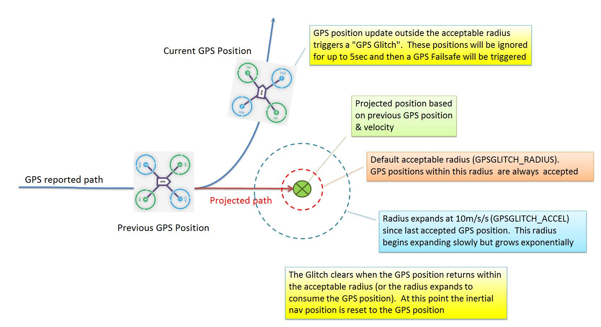

GPS Failsafe and Glitch Protection¶
This article describes the glitch protection mechanisms used to trigger GPS Failsafe.
Overview¶
GPS Systems can occasionally drop the signal or provide significantly inaccurate position information (aka “glitches”). While errors are more likely in conditions where the GPS signal can bounce off multiple paths before reaching the receiver (multipathing), errors can occasionally occur even with clear sky.
A GPS failsafe event will occur if GPS 3D lock or the position “Glitches” for at least 5 seconds while Copter is in a mode that requires the GPS (RTL, Auto, Loiter, Circle, Position, Guided or Drift). The GPS failsafe response can be set to Land or switch to AltHold mode so that you can retake manual control.
Without GPS updates, the inertial sensors allow approximately 10 seconds of accurate position information but after this the horizontal position drift becomes so large that the horizontal position cannot be maintained at all. At this point if you still have RC radio control it is recommended to take back control using Stabilize, Acro or AltHold as soon as possible.
Glitch Protection - Default¶
GPS glitch protection is provided which can help alert the pilot to a bad GPS position, trigger a failsafe and reduce the incidents of fly-aways. Glitches are detected by comparing the each new position update received from the GPS with a position projected out from the previous update’s position and velocity.
{kind=link}
The new position is accepted as “good” if:
the two positions are within the
GPSGLITCH_RADIUS(defaults to 5m).the new position is within a radius that is 10m/s/s (
GPSGLITCH_ACCEL) * dt * dt. Where “dt” is the time difference between the two samples.
During a glitch, “Bad Position” will be written on the ground station’s HUD
Glitch Protection - EKF¶
ArduPilot Extended Kalman Filter (EKF))provided glitch protection.
Glitch protection using the EKF works as follows:
When new GPS position measurements are received, they are compared to a position predicted using IMU measurements.
If the difference exceeds a statistical confidence level set by
EKF_POS_GATE, then the measurement won’t be used.While GPS measurements aren’t being used, a circle defined by an uncertainty radius grows around the predicted position. The rate at which this radius grows is controlled by
EKF_GLITCH_ACCEL. This is similar to the circle defined byGPSGLITCH_ACCEL, the difference being it is centered around the trajectory predicted by the IMU rather than previous GPS measurements. Because this allows for deviations in trajectory due to maneuvers, the default value forEKF_GLTCH_ACCELis smaller at 1.5 m/s/s. The acceleration growth of the circle is also increased when the vehicle is accelerating or turning to allow for the increase in IMU errors during maneuvers.If subsequent GPS measurements fall inside the circle, they will be accepted and the circle is reset back to the minimum radius controlled by
EKF_POS_GATE.If the GPS glitch is large enough and lasts long enough, the GPS measurements will continue to be rejected until the circle radius exceeds a value set by
EKF_GLITCH_RAD. When this happens, an offset is applied to the GPS position so that it matches the estimated vehicle position and the GPS positions are used again. The GPS offset is then reduced to zero at 1 m/s. This means that large long duration glitches will cause the vehicle to drift at a 1 m/s rate. This is slow enough to give the operator plenty of time to react.